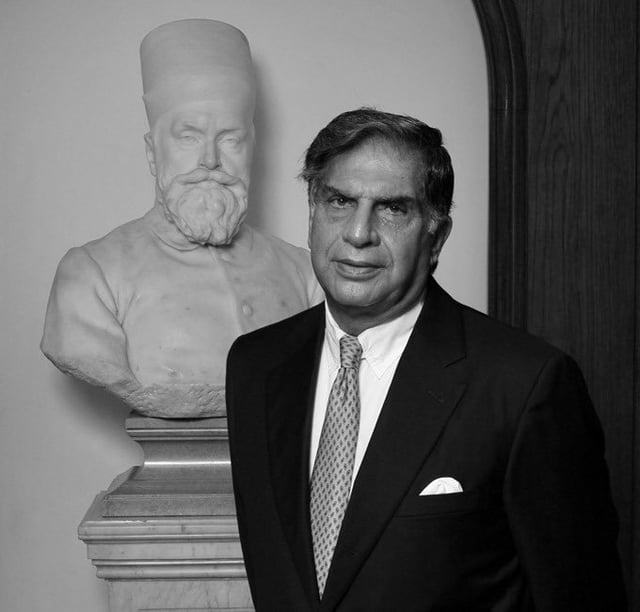

Biography
Early Life and Education:
Sir Ratan Tata was born on December 20, 1937, in Bombay (now Mumbai), India, into one of the
most prominent industrial families in the country. He was the son of Naval Tata and Sonoo Tata, and his
grandfather was Sir Dorabji Tata, the second president of the Tata Group.
Ratan Tata attended the Cathedral and John Connon School in Mumbai and later studied architecture and structural engineering at Cornell University, graduating in 1962.
Ratan Tata attended the Cathedral and John Connon School in Mumbai and later studied architecture and structural engineering at Cornell University, graduating in 1962.
Career at the Tata Group:
Ratan Tata joined the Tata Group in 1962, working in various departments. In 1991, he became
the chairman of the Tata Group, a time when the company faced financial difficulties. Under his leadership,
Tata Group transformed into a global conglomerate.
Key Contributions and Achievements:
Retirement and Legacy:
Ratan Tata stepped down as chairman in 2012 but remained active in public life. He has
received numerous accolades, including the Padma Bhushan and a knighthood in 2009. He continues to advocate
for education, healthcare, and social development.
Personal Life and Philosophy:
Despite his immense success, Ratan Tata has led a modest life, dedicated to giving back to
society. He remains unmarried and focused on his philanthropic efforts. His leadership philosophy emphasizes
values and dignity in business and life.